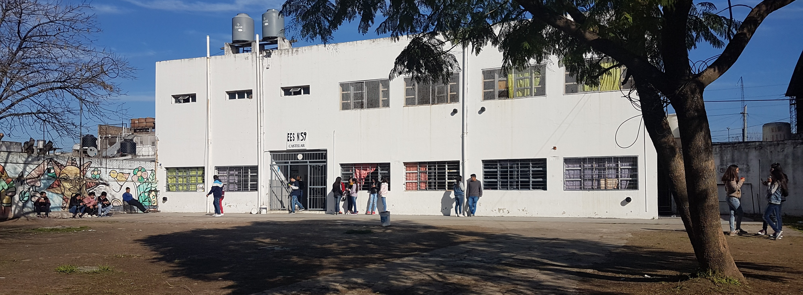

Bienvenidos a nuestra escuela
En Morón formamos jóvenes curiosos y críticos con una sólida orientación en Ciencias Naturales.
A través de clases prácticas y experimentales en biología, química, física y ciencias de la Tierra, desarrollamos el pensamiento científico, la investigación y el compromiso con el medio ambiente.
Combinamos excelencia académica con valores, arte y deporte para preparar a nuestros estudiantes para el futuro.
Te invitamos a ser parte de nuestra comunidad educativa.
Ubicación
Evaristo Iglesias 3570, Castelar, Morón, Buenos Aires.